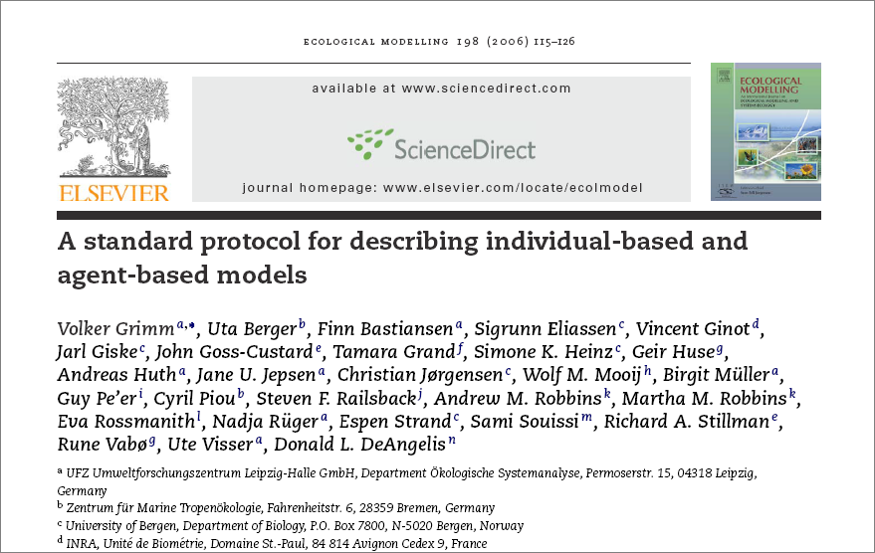
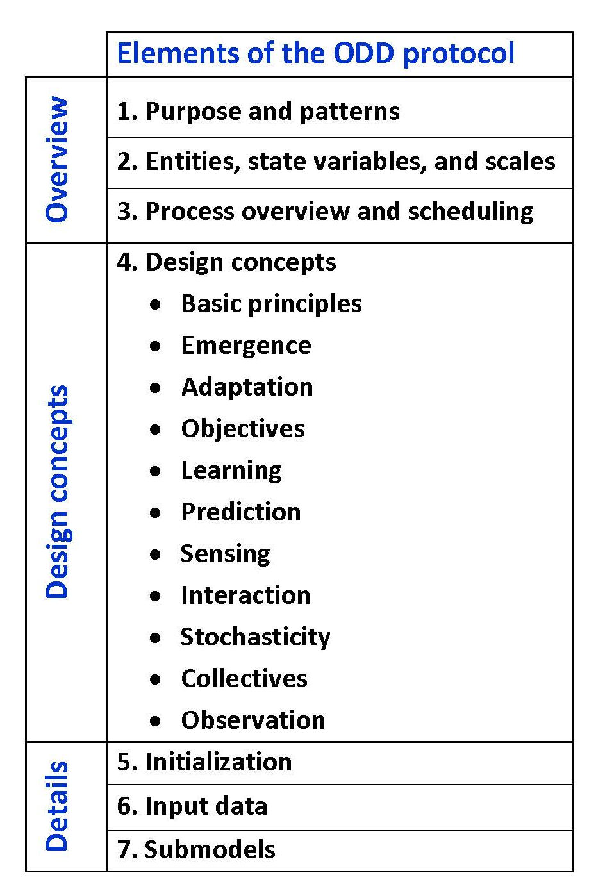
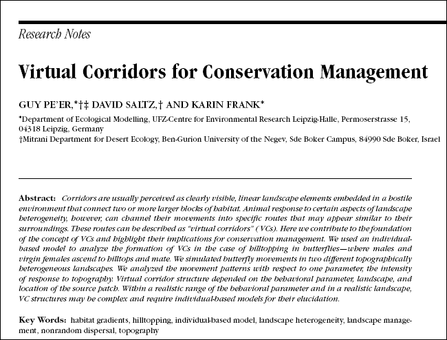
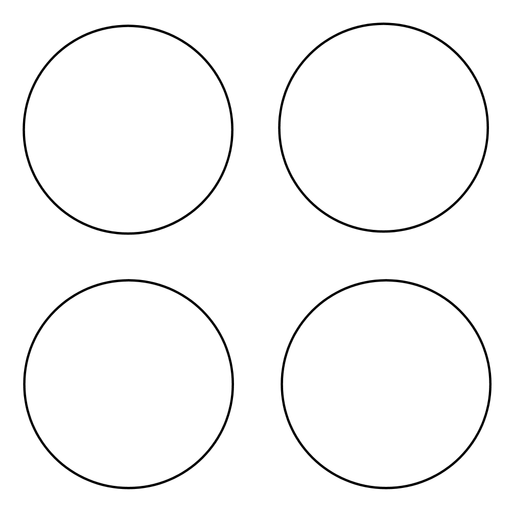
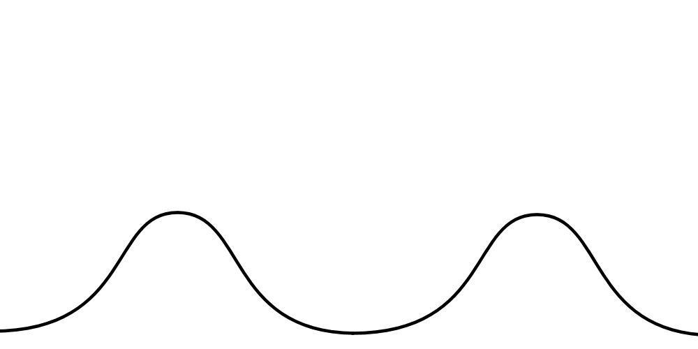
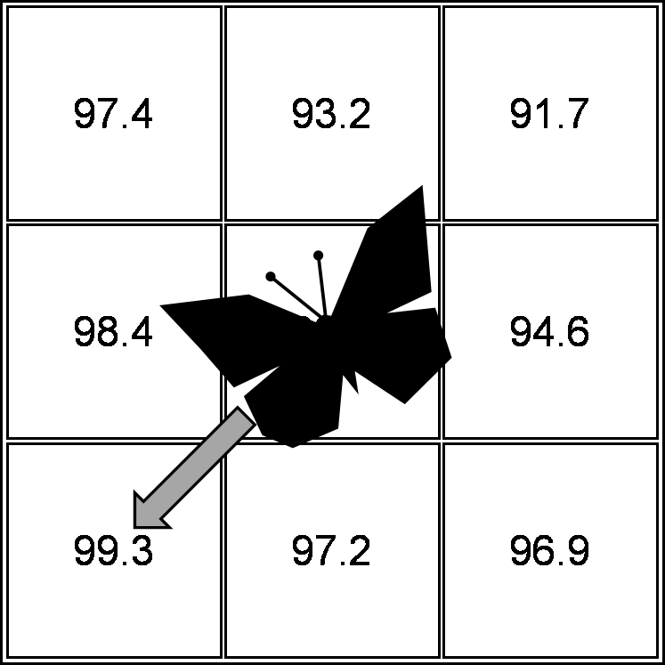
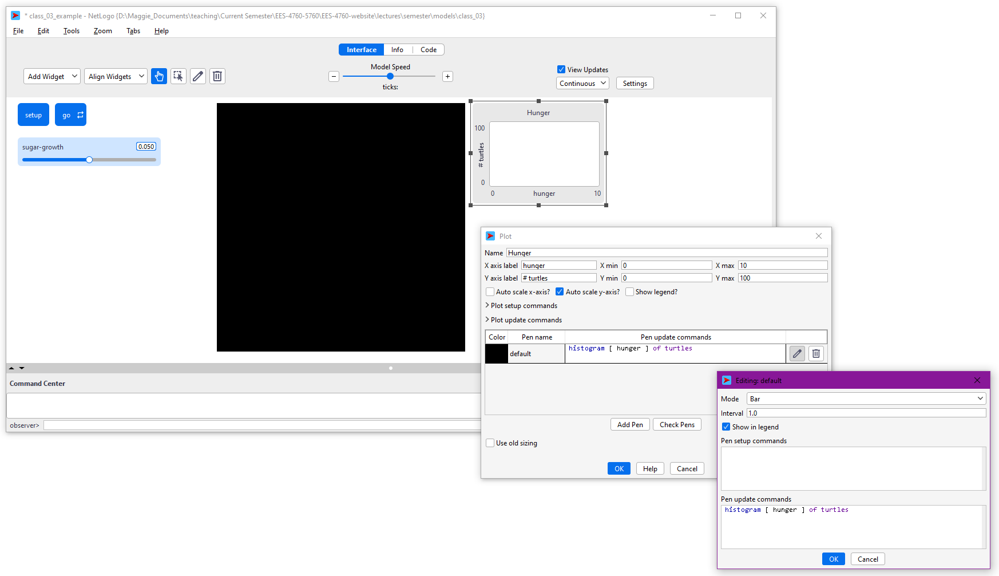

EES 4760/5760
Agent-Based and Individual-Based Computational Modeling
J. Magnolia Gilligan


General
Detailed
Questions:
turtles-own, patches-own, etc.to-go used submodels to-eat &
to-move in our sugarscape modelThere are 11 design concepts (see Table 3.1).
Textbook has one chapter for each.
Basic Principles: Basis of model in general concepts and theories
Emergence: What emerges as the model
runs?
(phenomena not imposed or directly programmed)
Adaptation How do agents respond to changes
in their environment?
What decisions do they make, and how do they
decide?
Do they seek objectives directly (deliberately) or
indirectly (mimic natural behavior)?
Note: Adaptation means responding to current conditions. It’s different from persistent change (the way the word is used in evolution)
Seek shelter when it starts to rain.
Objectives (Fitness): Goals of agents? What
determines survival?
Do objectives change as agent
changes?
Learning: How do individuals change behavior as they gain experience?
Note: This is where persistent change happens. It’s often confused with adaptation
After getting rained on several times, start carrying an umbrella when it’s cloudy.
If the process scheduling step contains a list of
processes or actions,
explain, in detail what
submodels represent those processes or actions.

Pe’er, G., D. Saltz, & K. Frank, “Virtual corridors for conservation management,” Conservation Biology 19, 1997 (2005).
butterfly_odd.nlogox”Ecologists observe that as butterflies move uphill, they concentrate into narrow and well-definied virtual corridors rather than following any old path to the top of the hill.
Explore the concept of virtual corridors:
Can concentrations of migrating animals emerge spontaneously from movement behavior and topography, instead of being a special habitat?
Specifically, How does the concentration of hill-topping butterflies emerge from:
Landscape: cell elevations set to a flat landscape with four hills


Butterflies: 500 are created and placed in one patch

For next week, you will follow the book and write code to implement the butterfly model.
with)turtles is an agentset of all turtles.
with is one of many primitives that create a subset
of an agentset:
ask turtles with [color = blue] [move]
Similar keywords for subsetting:
with-min, with-max (one or more
turtles)n-of, max-n-of, min-n-of
(exactly n turtles)one-of, max-one-of,
min-one-of (exactly one turtle)Use the dictionary to look up correct syntax.
Click “setup” and then try this:
ask patches [ set pcolor black ]
ask patches with-max [sugar] [ set pcolor cyan ]
ask max-n-of 5 patches [sugar] [ set pcolor pink ]to move
if sugar <= 0 or any? other turtles-here
[
move-to max-one-of neighbors [ sugar ]
]
endIf there isn’t any sugar, or if there’s another turtle on the patch, it moves to the neighboring patch with the most sugar.
move in the context of a turtle:
sugar in the context of that neighbor
[ … ] signal the change of
context.sugar, and pick one
of them at randomUniform distribution of random integers less than
q
random qrandom 5 would return 0, 1, 2, 3, or 4Uniform distribution of floating-point numbers less than
x
random-float qrandom-float 5 would return a number between 0 and
4.9999…. The number could be very close to 5.Select one patch at random and turn it green
ask one-of patches [set pcolor green]Select one agent at random and turn it right 5 degrees:
ask one-of turtles [right 5]random q returns an integer \(n\) where \(0 \le
n < q\)
random-float q returns a floating-point number \(x\) where \(0 \le
x < q\)
random q return?random-float q return?random-float q can’t return
\(q\)?
let q 0.4
let x (list)
repeat 10000 [ set x lput (random-float q) x ]
show max x
show (q - max x) / qOn the interface tab:
histogram [hunger] of turtles

sugar-growth?to go that
stops the model after 2000 ticks ; if ticks > 2000 [ stop ]Use ABM if one or more of the following are essential to your research question:
When ABMs are too hard, use aggregated modeling techniques: